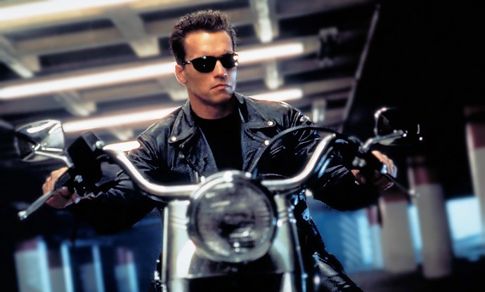

<!--
  Generated template for the FeedPage page.

  See http://ionicframework.com/docs/components/#navigation for more info on
  Ionic pages and navigation.
-->
<ion-header>

  <ion-navbar>
    <ion-title>Feed</ion-title>
  </ion-navbar>

</ion-header>


<ion-content padding>
  <ion-card>
    <ion-item>
      <ion-avatar item-start>
        
      </ion-avatar>
      <h2>{{ objeto_feed.titulo }}</h2>
      <p>{{ objeto_feed.data }}</p>
    </ion-item>

    

    <ion-card-content>
      <p>{{ objeto_feed.descricao }}</p>
    </ion-card-content>

    <ion-row>
      <ion-col>
        <button ion-button icon-left clear small>
            <ion-icon name="thumbs-up"></ion-icon>
            <div>{{ objeto_feed.qtd_likes }} likes</div>
          </button>
      </ion-col>
      <ion-col>
        <button ion-button icon-left clear small>
            <ion-icon name="text"></ion-icon>
            <div>{{ objeto_feed.qtd_comments }} comments</div>
          </button>
      </ion-col>
      <ion-col center text-center>
        <ion-note>
          {{ objeto_feed.time_comment }}
        </ion-note>
      </ion-col>
    </ion-row>

  </ion-card>

  <ion-card *ngFor="let post of lista_posts">
    <ion-item>
      <h2>{{ post.title }}</h2>
      <p>{{ post.body }}</p>
    </ion-item>
  </ion-card>

  <ion-fab bottom right>
    <button ion-fab color="light"><ion-icon name="arrow-dropleft"></ion-icon></button>
    <ion-fab-list side="left">
      <button ion-fab><ion-icon name="logo-facebook"></ion-icon></button>
    </ion-fab-list>
  </ion-fab>
</ion-content>